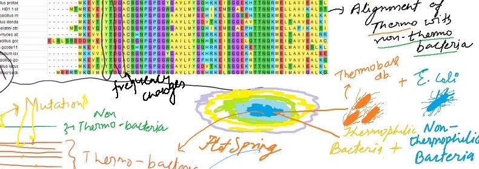

Comparative study to find mutational pattern in thermophilic bacteria
Creating thermostable enzymes, remains one of the essential requirements in protein engineering, but there is a difficulty in designing a general method, because benefit from mutations observed in evolution studies is difficult to rationalize in molecular perspective as mutations occur far from active site of enzymes. My objective with this study was to gain more insights in the molecular evolution of Thermophiles.
In this work, I wanted to see if there is a mutational pattern in the change of a particular amino acid from non-thermophilic bacteria to a thermophilic bacteria and its based on hypothesis that amino acid that contribute to a proteins stability have a higher probability of being selected during the evolutionary process than those that do not contribute to stability.
Approximately 8600 mutational position in 50 diverse thermophilic bacteria and compared the changes with a non-thermophilic bacteria. I created a heat map(matrix) depicting highest frequency change in all amino acid and then compared my results with some case studies in which more thermostable forms of enzymes were created using consensus design.
Results
From the comparison of Case studies, I found that mutational changes in more stable enzymes that were created from consensus design, were matching with frequency matrix that I got (2nd Image), arrows point towards highest occurance in frequency matrix which are the same amino acid changes after consensus design.